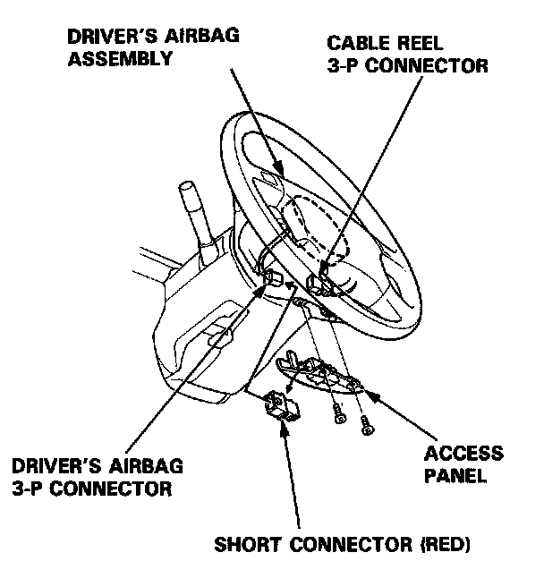
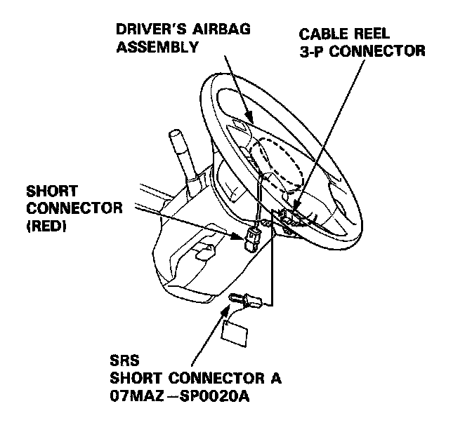
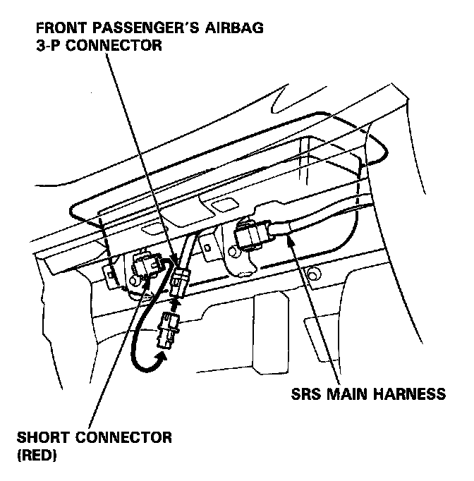
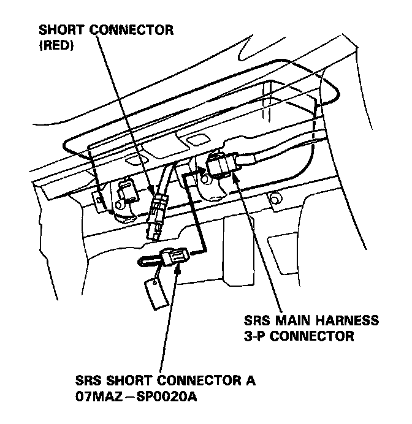
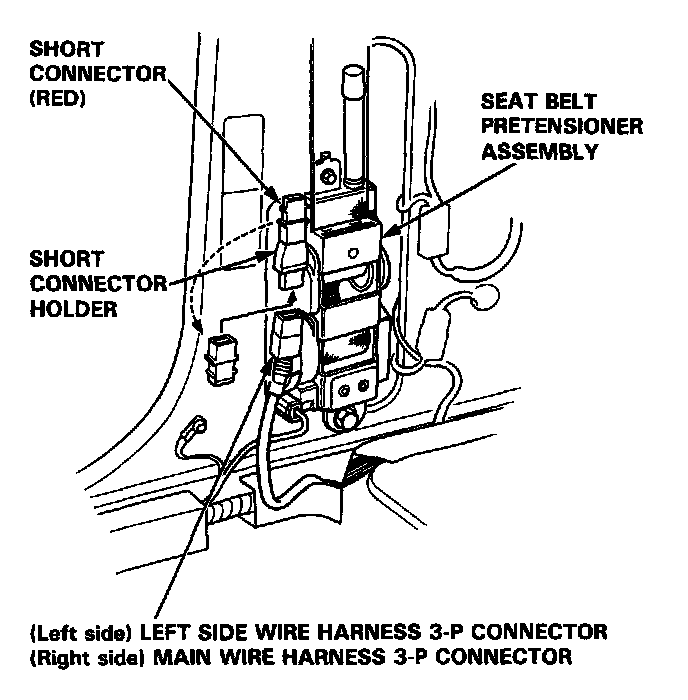

Air Bag(s) Arming and Disarming: Service and Repair
Short Connector Installation
Install short connectors as follows whenever you are working near SRS wiring or components.
CAUTION:
- Before disconnecting the airbag connector(s), turn off the ignition switch and wait for at least 3 minutes to let the capacitor in the back-up circuit discharge. This will prevent a malfunction of the seat belt pretensioners.
- After completing repair work, be sure to remove both short connectors.
NOTE (L and LS models): Before disconnecting the battery cables, be sure you get the customer's anti-theft radio code number.
1. Disconnect the battery negative cable, then disconnect the positive cable.
2. Remove the access panel from the steering wheel then remove the short connector (RED).

3. Disconnect the 3-P connector between the airbag and the cable reel, then install the short connector (RED) on the airbag side of the connector.
4. Install the SRS short connector A on the cable reel side of the 3-P connector.

5. Remove the glove box, then disconnect the connector between the front passenger's airbag and the SRS main harness.
6. Install the short connector (RED) on the airbag side of the 3-P connector.

7. Install the SRS short connector A on the SRS main harness side of the 3-P connector.

8. Remove the right "B" pillar trim panels.
9. Remove the short connector (RED) from the short connector holder.
10. Disconnect the seat belt pretensioner 3-P connector, then install the short connector (RED) on the seat belt pretensioner side of the connector.

11. Repeat steps 8, 9, and 10 on the left side.
12. After completing repair work, be sure to remove the short connectors and reconnect all SRS connectors.